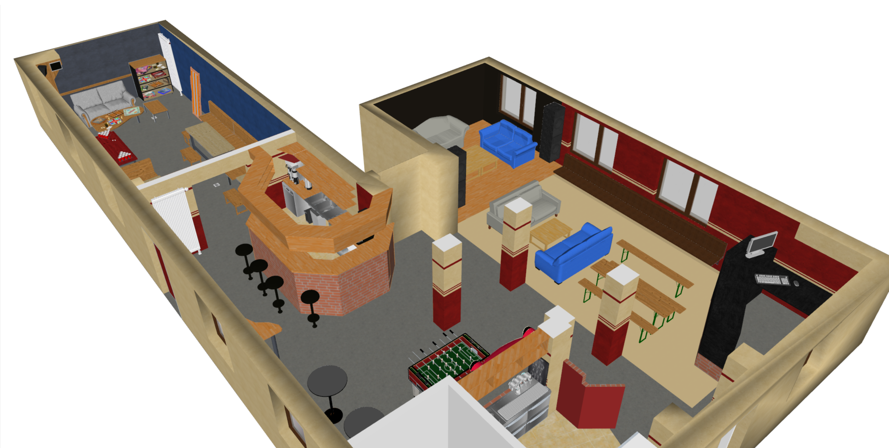
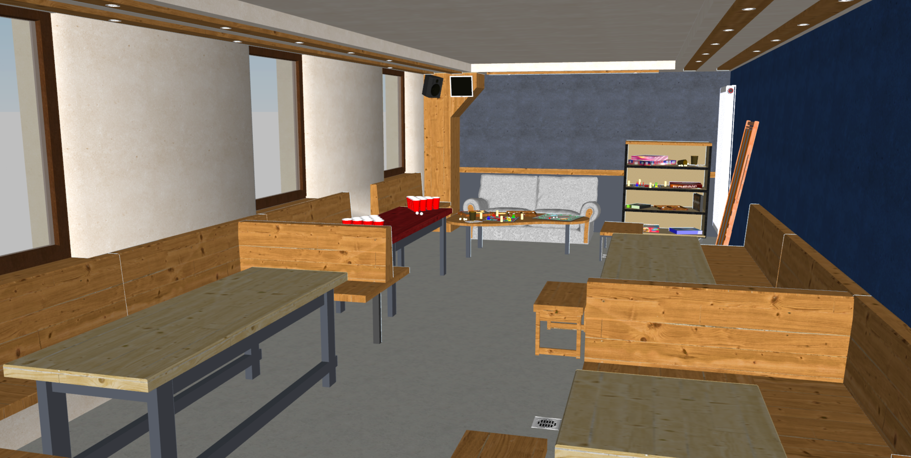
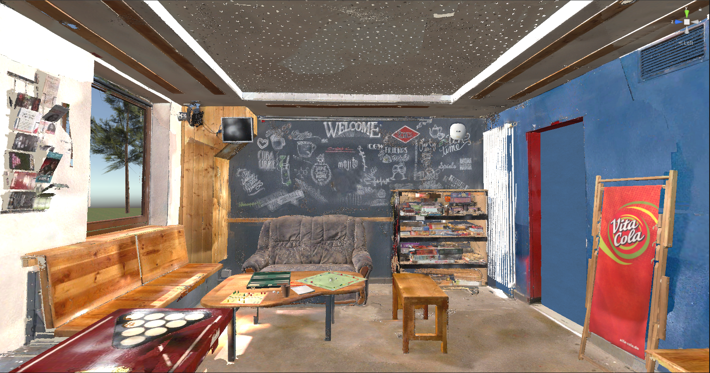

Master Thesis
In the field of virtual reality, there has been a growing interest in exploring Immersive Virtual Environments (IVEs) across various industries,
including gaming, education, healthcare, and training as they provide engaging and realistic experiences for users.
The realism of these environments is essential, as they offer a higher sense of presence and immersion, enabling users to interact with digital spaces
and objects in ways that mimic the real world.
It is believed that immersive virtual environments have potential benefits in improving spatial understanding and task performance.
The main goal of my master thesis consists in the investigation of different visualization approaches to visualize an interactable room in an Immersive Virtual Environment (IVE). This includes the implementation of three different visualization approaches as e.g. 360° images, CGI modeling and 3D scanning of a single indoor scene.

CGI IVE:
3D scan environment:
The main goal of my master thesis consists in the investigation of different visualization approaches to visualize an interactable room in an Immersive Virtual Environment (IVE). This includes the implementation of three different visualization approaches as e.g. 360° images, CGI modeling and 3D scanning of a single indoor scene.
Project characteristics
:- Title: Development and Evaluation of different Visualization Approaches for interactable rooms in Immersive Virtual Environments
- Team: 1 person (me)
- Duration: March 2023 - October 2023
- Project partner: TU Ilmenau
Implementation
360° environment:- Indoor recordings with the Kandao Obsidian Pro camera from several positions to enable navigation and interaction possibilities inside the virtual environment
- Unity setup:
- XR Interaction Toolkit
- Shader Graph
- Universal Render Pipeline (URP)
- Implementation of a teleportation system in Unity
- Interaction with the environment by using the controllers
- User Interface to switch between lighting conditions
Equirectangular image of one 360° shot
Video 1: 360° scene
CGI IVE:
- Design of the 3D model of the room using SketchUp Make 2017
- Manual measurement and design of single elements of the room
- Application of textures

CGI model of the location

CGI model of the room
- UI Game Menu with Poke Animation
- Beerpong Game in the scene
- Unity setup:
- XR Interaction Toolkit
- Shader Graph
- Universal Render Pipeline (URP)
- Navigation: Continuous movement (Touchpad), Teleportation (Trigger-Button) or natural movement
Video 2: CGI beerpong game
Video 3: CGI scene
3D scan environment:
- 3D scan of the room with the Artec Leo 3D handheld scanner
- Postprocessing of more than 400 GB of data with Artec Studio 17

3D model of the room after postprocessing
- Interaction with the environment by using the controllers
- Unity setup:
- XR Interaction Toolkit
- Shader Graph
- Universal Render Pipeline (URP)
- Occlusion Culling
- Fast Approximate Anti-aliasing (FXAA)
- Navigation: Continuous movement (Touchpad), Teleportation (Trigger-Button) or natural movement
Video 4: 3D scan scene